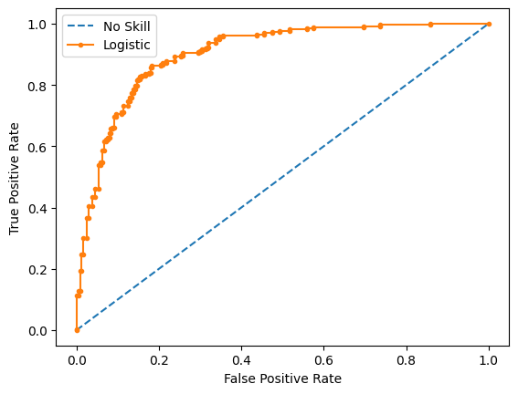
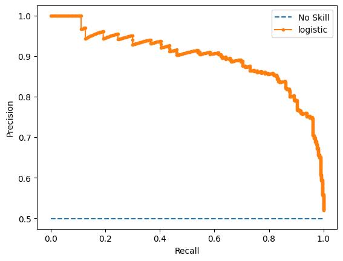

from sklearn.datasets import make_classification
from sklearn.dummy import DummyClassifier
from sklearn.model_selection import cross_val_score, RepeatedStratifiedKFoldFailure of Accuracy
Model Evaluation
def evaluate_model(X, y, model):
cv = RepeatedStratifiedKFold(n_splits=10, n_repeats=3, random_state=1)
scores = cross_val_score(model, X, y, scoring='accuracy', cv = cv)
return scoresX, y = make_classification(n_samples=10000, n_features=2, n_redundant=0,
n_clusters_per_class=1, weights=[0.99], flip_y=0, random_state=4)model = DummyClassifier(strategy='most_frequent')scores = evaluate_model(X, y, model)print(f'Mean Accuracy: {scores.mean()*100 : 0.2f}%')Precision, Recall, and F-measure
Calculate Precision
calculates precision for 1:100 dataset with 90 tp and 30 fp
from sklearn.metrics import precision_score,recall_score# define actual
act_pos = [1 for _ in range(100)]
act_neg = [0 for _ in range(10000)]
y_true = act_pos + act_neg
# define predictions
pred_pos = [0 for _ in range(10)] + [1 for _ in range(90)]
pred_neg = [1 for _ in range(30)] + [0 for _ in range(9970)]
y_pred = pred_pos + pred_neg# calculate prediction
precision = precision_score(y_true, y_pred, average='binary')
print(f'Precision: {precision: 0.3f}')Precision: 0.750Calculates precision for 1:1:100 dataset with 50tp, 20fp, 99tp, 51fp
# define actual
act_pos1 = [1 for _ in range(100)]
act_pos2 = [2 for _ in range(100)]
act_neg = [0 for _ in range(10000)]
y_true = act_pos1 + act_pos2 + act_neg
# define predictions
pred_pos1 = [0 for _ in range(50)] + [1 for _ in range(50)]
pred_pos2 = [0 for _ in range(1)] + [2 for _ in range(99)]
pred_neg = [1 for _ in range(20)] + [2 for _ in range(51)] + [0 for _ in range(9929)]
y_pred = pred_pos1 + pred_pos2 + pred_neg# calculate prediction
precision = precision_score(y_true, y_pred, labels=[1,2], average= 'micro')
print( ' Precision: %.3f ' % precision) Precision: 0.677 Calculate Recall
Calculates recall for 1:100 dataset with 90 tp and 10 fn
from sklearn.metrics import recall_score# define actual
act_pos = [1 for _ in range(100)]
act_neg = [0 for _ in range(10000)]
y_true = act_pos + act_neg
# define predictions
pred_pos = [0 for _ in range(10)] + [1 for _ in range(90)]
pred_neg = [0 for _ in range(10000)]
y_pred = pred_pos + pred_neg# calculate recall
recall = recall_score(y_true, y_pred, average='binary')
print(f'Recall: {recall: .3f}')Recall: 0.900Calculates recall for 1:1:100 dataset with 77tp, 23fn and 95tp, 5fn
# define actual
act_pos1 = [1 for _ in range(100)]
act_pos2 = [2 for _ in range(100)]
act_neg = [0 for _ in range(10000)]
y_true = act_pos1 + act_pos2 + act_neg# define predictions
pred_pos1 = [0 for _ in range(23)] + [1 for _ in range(77)]
pred_pos2 = [0 for _ in range(5)] + [2 for _ in range(95)]
pred_neg = [0 for _ in range(10000)]
y_pred = pred_pos1 + pred_pos2 + pred_neg# calculate recall
recall = recall_score(y_true, y_pred, labels=[1,2], average='micro')
print(f'Recall: {recall:.3f}')Recall: 0.860F-measure
Calculates f1 for 1:100 dataset with 95tp, 5fn, 55fp
from sklearn.metrics import f1_score# define actual
act_pos = [1 for _ in range(100)]
act_neg = [0 for _ in range(10000)]
y_true = act_pos + act_neg# define predictions
pred_pos = [0 for _ in range(5)] + [1 for _ in range(95)]
pred_neg = [1 for _ in range(55)] + [0 for _ in range(9945)]
y_pred = pred_pos + pred_neg# calculate score
score = f1_score(y_true, y_pred, average= 'binary')
print(f'F-measure: {score: .3f} ')F-measure: 0.760 ROC Curves and Precision-Recall Curves
from sklearn.datasets import make_classification
from sklearn.dummy import DummyClassifier
from sklearn.model_selection import train_test_split
from sklearn.linear_model import LogisticRegression
from sklearn.metrics import roc_curve, roc_auc_score, precision_recall_curve
from matplotlib import pyplotX, y = make_classification(n_samples=1000, n_classes=2, random_state=1)trainX, testX, trainy, testy = train_test_split(X, y, test_size=0.5, random_state=2)ROC Curves and ROC AUC
model = LogisticRegression(solver='lbfgs')model.fit(trainX, traiy)LogisticRegression()In a Jupyter environment, please rerun this cell to show the HTML representation or trust the notebook.
On GitHub, the HTML representation is unable to render, please try loading this page with nbviewer.org.
LogisticRegression()
yhat = model.predict_proba(testX)pos_probs = yhat[:, 1]fpr, tpr, _ = roc_curve(testy, pos_probs)pyplot.plot([0,1], [0,1], linestyle='--', label='No Skill')
pyplot.plot(fpr, tpr, marker= '.', label='Logistic')
pyplot.xlabel('False Positive Rate')
pyplot.ylabel('True Positive Rate')
pyplot.legend()
pyplot.show()
ROC Area Under Curve (AUC) Score
model = DummyClassifier(strategy='stratified')model.fit(trainX, traiy)DummyClassifier(strategy='stratified')In a Jupyter environment, please rerun this cell to show the HTML representation or trust the notebook.
On GitHub, the HTML representation is unable to render, please try loading this page with nbviewer.org.
DummyClassifier(strategy='stratified')
yhat = model.predict_proba(testX)pos_probs = yhat[:, 1]roc_auc = roc_auc_score(testy, pos_probs)
print(f'No skill ROC AUC {roc_auc: .3f}')No skill ROC AUC 0.472model = LogisticRegression(solver='lbfgs')
model.fit(trainX, traiy)LogisticRegression()In a Jupyter environment, please rerun this cell to show the HTML representation or trust the notebook.
On GitHub, the HTML representation is unable to render, please try loading this page with nbviewer.org.
LogisticRegression()
yhat = model.predict_proba(testX)
pos_probs = yhat[:, 1]roc_auc = roc_auc_score(testy, pos_probs)
print(f'Logistic ROC AUC {roc_auc: 0.3f}')Logistic ROC AUC 0.903Precision-Recall Curves and AUC
no_skill = len(y[y==1]) / len(y)precision, recall, _ = precision_recall_curve(testy, pos_probs)pyplot.plot([0,1], [no_skill, no_skill], linestyle='--', label='No Skill')
pyplot.plot(recall, precision, marker='.', label='logistic')
pyplot.xlabel('Recall')
pyplot.ylabel('Precision')
pyplot.legend()
pyplot.show()
Precision-Recall Area Under Curve (AUC) Score
from sklearn.metrics import aucmodel = DummyClassifier(strategy='stratified')
model.fit(trainX, traiy)DummyClassifier(strategy='stratified')In a Jupyter environment, please rerun this cell to show the HTML representation or trust the notebook.
On GitHub, the HTML representation is unable to render, please try loading this page with nbviewer.org.
DummyClassifier(strategy='stratified')
yhat = model.predict_proba(testX)pos_probs = yhat[:,1]precision, recall, _ = precision_recall_curve(testy, pos_probs)
auc_score = auc(recall, precision)
print(f'No Skill PR AUC: {auc_score: 0.3f}')No Skill PR AUC: 0.607model = LogisticRegression(solver='lbfgs')
model.fit(trainX, trainy)
yhat = model.predict_proba(testX)
pos_probs = yhat[:, 1]precision, recall, _ = precision_recall_curve(testy, pos_probs)
auc_score = auc(recall, precision)
print(f'Logistic PR AUC: {auc_score: 0.3f}')Logistic PR AUC: 0.898